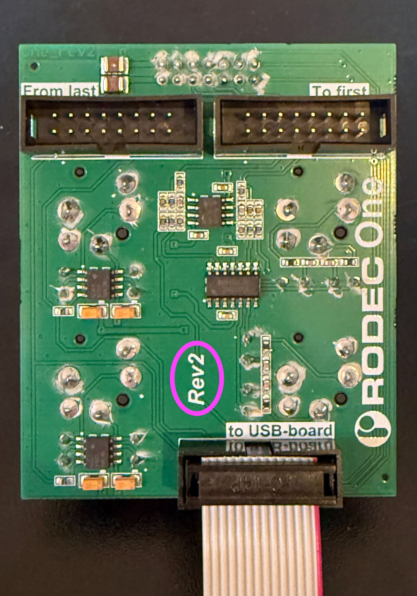
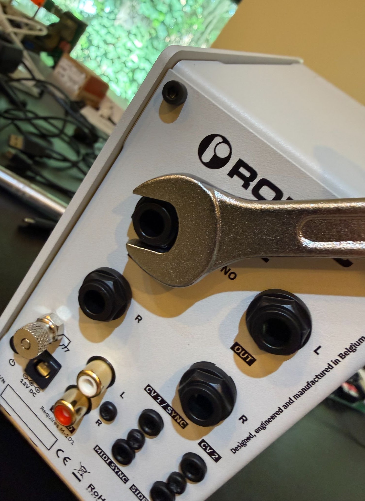
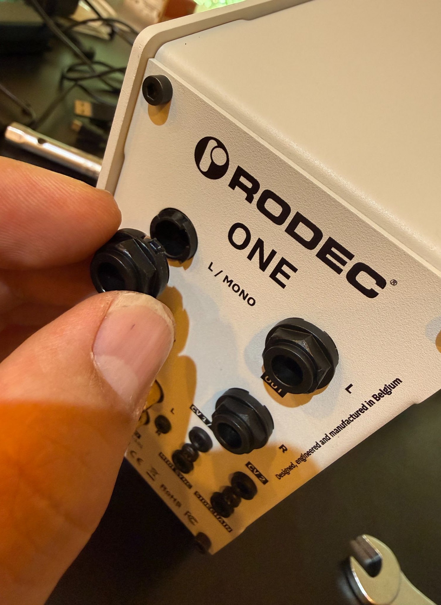
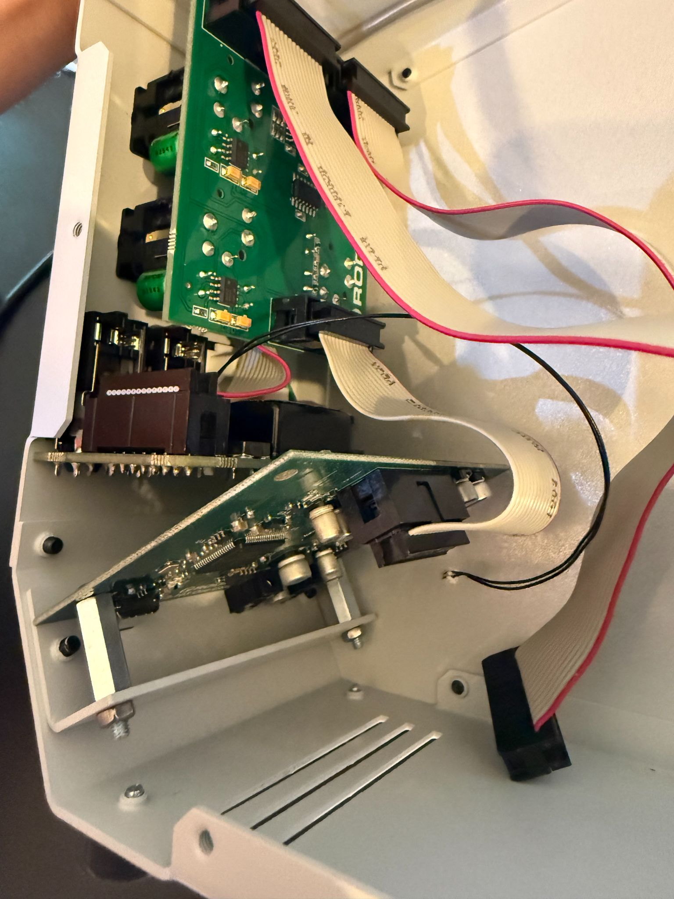

Rodec ONE USB Board
Installing the Rodec USB Board & REV2 Backplane
Before you begin, please ensure the Rodec ONE is completely powered off and unplugged from any electrical outlet.
Step 1: Prepare the Chassis
- Remove the side panel of the Rodec ONE to access the internal components.
- Remove the blind plate from the slot where the new USB board will be installed.
—---- ONLY FOR RODEC ONE WITHOUT THE REV2 BACKPLANE —----
This step is only needed if your ONE does NOT have the REV2 board or higher. Check the print "REV2" on the PCB board

Step 2: Disconnect the Old Backplane
- Locate the existing backplane with the four 6.3mm (1/4") TRS connectors.
- Carefully disconnect all ribbon cables attached to this backplane. (Tip: Take a quick photo before disconnecting so you remember where they go!)
Step 3: Remove the TRS Connectors
- Move to the back of the unit.
- Using a 12mm wrench, give the cap of each TRS connector a slight 10-degree counter-clockwise turn.
- The caps will loosen, allowing you to easily remove them and take out the old board.


Step 4: Install the New REV2 Backplane
- Position the new REV2 backplane into place.
- Secure it from the back using the existing caps you removed in the previous step.
—---- UNTIL HERE FOR THE REV2 BACKPLANE REPLACEMENT —----
Step 5: Install the USB Board
- Slide the new USB board into its designated slot.
- Secure it firmly in place using its mounting screws.
Step 6: Reconnect & Test
- Reattach all the ribbon cables to their correct positions on the new boards.
- Before closing everything up, plug in the unit and perform a quick test to ensure both the USB functionality and the TRS connections are working perfectly.

Step 7: Final Assembly
- Once you've verified everything works, unplug the power again.
- Screw the side panel back onto the chassis.
Note: Take your time when handling the ribbon cables to avoid bending any pins. If you experience any resistance when turning the TRS caps, double-check your wrench alignment.